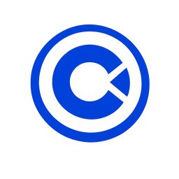

BlurText
scrollJemný nástup slov v nadpise.
Nadpis s jemným príchodom

Clippio Function Webfunkčné ukážky prvkovTáto stránka ukazuje funkcie, ktoré sa dajú použiť na weboch Clippio: vizuálne pozadia, textové efekty, karty, CTA, formulárové kroky a mikrointerakcie. Pri reálnom projekte sa vyberá len to, čo pomáha cieľu webu.
Nie každá funkcia patrí na každý web. Prémiový dojem vzniká výberom, nie preplnením.
Pozadie má zmeniť charakter webu, nie iba farbu jednej karty. Každý štýl nižšie upraví celú stránku.
Jemný nástup slov v nadpise.
Písmená nastupujú postupne.
Badge alebo kreatívny detail.
Krátky typovací claim.
Lesk pre krátky claim alebo CTA.
Text reaguje na kurzor.
Pohybový pás pre brand sekciu.
Glitch detail pre tech projekt.
Bezpečné zvýraznenie nadpisu.
Digitálny odkaz, ktorý sa odhalí.
Strieda kľúčové slová.
Jemný pohyb pri scrollovaní.
Hero claim s viacerými službami.
Rýchly informačný pás.
Text reaguje na blízkosť kurzora.
Čísla v benefit sekcii.
Prémiová karta služby s pohybovým okrajom.
Karta s odleskom pri prechode myšou.
CTA s pohybovým okrajom.
Vrstvený proces pri scrollovaní.
Grid pre služby alebo benefity.
Klikni na vrstvené karty.
Sklenený panel pre prémiové UI.
3D karta reagujúca na kurzor.
Galéria s rôznou výškou kariet.
UI prvok pre projektové súbory.
Menu s postupným nástupom položiek.
Osobná karta značky.
Hravá navigácia pre kreatívnejšie weby.
Svetlo pod kurzorom.
Glow okraj pre dôležitú kartu.
Prepínanie kariet pre porovnanie balíkov.
Sada ikon pre služby.
Pohybový zoznam služieb.
Krokový formulár alebo proces.
1. Cieľ webu
Klikni do karty. Hodí sa na hravé CTA.
Vlastný kurzor a svetlo pod myšou. Nie pre každý firemný web.
Tlačidlo sa jemne ťahá za kurzorom.
Peel efekt pre badge alebo promo prvok.
Obrázky nasledujú kurzor. Efektné, ale s nižším ROI na konzervatívnom webe.
Klient rýchlo pochopí, ktoré efekty sú pre jeho typ webu relevantné.
Keď efekt pomáha pochopiť službu, zvýrazniť CTA, ukázať rozdiel medzi balíkmi alebo posilniť dôveru v značku.
Keď efekt spomaľuje web, ruší čítanie, zakrýva obsah alebo existuje len preto, že vyzerá zaujímavo.
Pre väčšinu firemných webov stačí 2–5 dobre použitých mikrointerakcií. Viac efektov často znižuje predajný dojem.